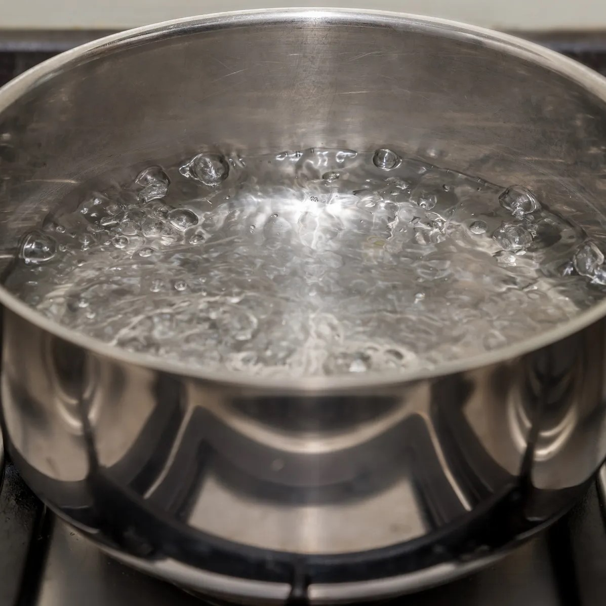
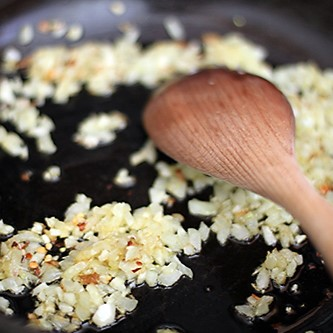
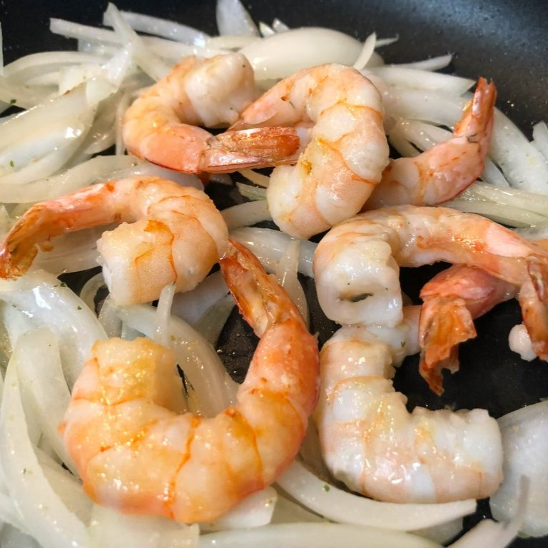
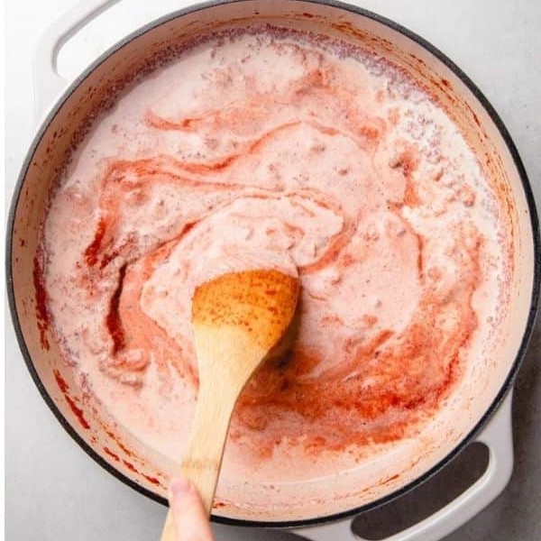
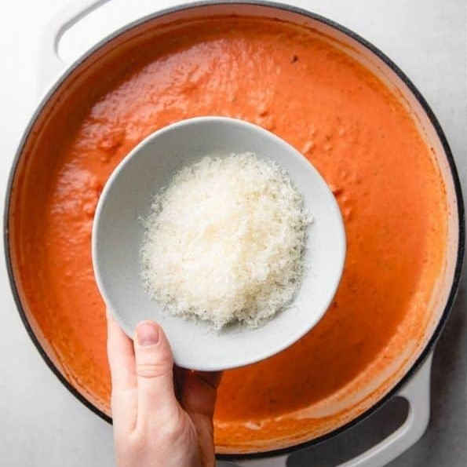
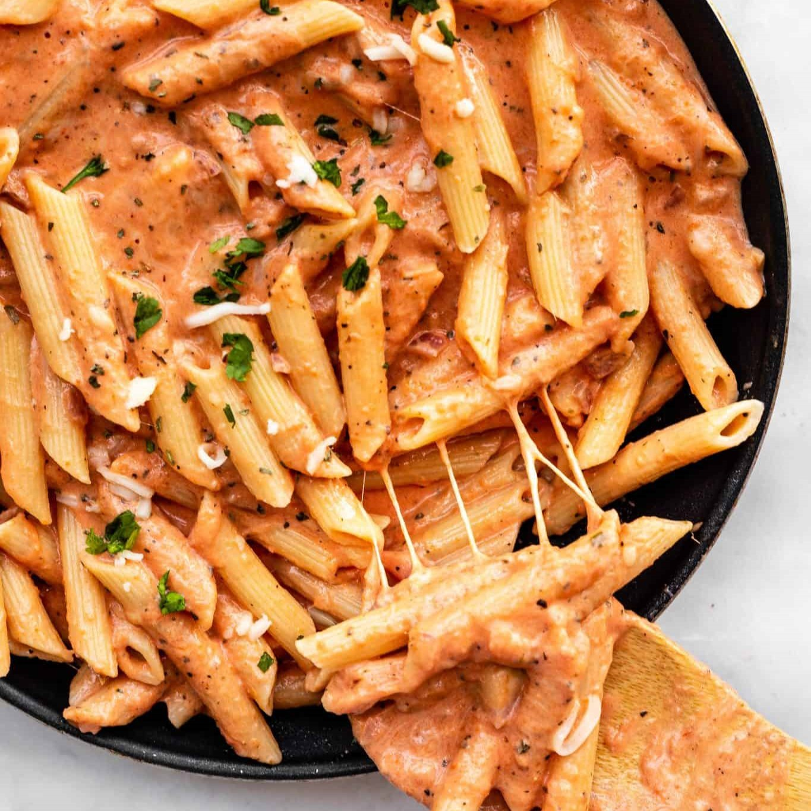

:strip_icc()/SuCasaDesign-Modern-9335be77ca0446c7883c5cf8d974e47c.jpg){kind=link}
{kind=link}
{kind=link}
{kind=link}
What is Rose sauce?
Rose sauce or "pink" sauce is made by adding dairy, typically heavy cream, to a tomato based sauce. This is sometimes called pink sauce because the two combined give the sauce a beautiful pink hue. This pasta is very easy to whip up and you can add anything and everything you'd like to it. Protein choice is entirely up to you, however I quite enjoy how shrimp pairs well with pasta!
Here's what you'll need:
Let's begin!
Step 1: Boil the Water
Fill a large pot with water and add a pinch of salt to the water. Bring the stove to high heat. Cook the pasta al dente, according to the package instructions. Once cooked reserve some pasta water in a cup for later.
Step 2: Sautee the onion and garlic
Add olive oil (1tbsp) and butter (2tbsp) to a large saucepan and set the stove to medium high. Once the butter is melted, and the onions and cook for 4-5 minutes until they are translucent and soft. Then add your minced garlic and let it cook for 1 minute.
Step 3: Add the protein
Add your protein of choice in. In this case were using cooked shrimp, so let the shrimp cook until small in sized and noticeably curled.
Step 4: Make the sauce
 Add in the whole bottle of tomato passata to the saucepan and then add in the basil (1 tsp), crushed chicken bouillon cube, a pinch of sugar, red chili flakes to your own spice preference, and salt pepper to your preferred taste. Let the sauce simmer for 2-3 minutes and then add the heavy cream (1/2 cup), milk (1/2 cup) and freshly shredded mozzarella cheese (1/2 cup) to the saucepan. Let simmer for another 2-3 minutes and stir well.
Step 5: Add pasta and serve!
Add your cooked pasta in your saucepan and combine the sauce and pasta well. Turn the stove to low heat and let warm for a 1-2 minutes. OPTIONAL: If the sauce is too thick, add some pasta water to help thin out the sauce to your liking.